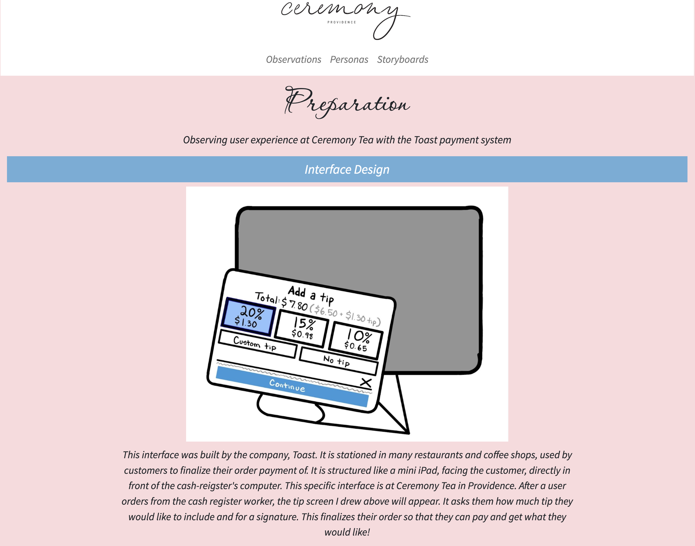
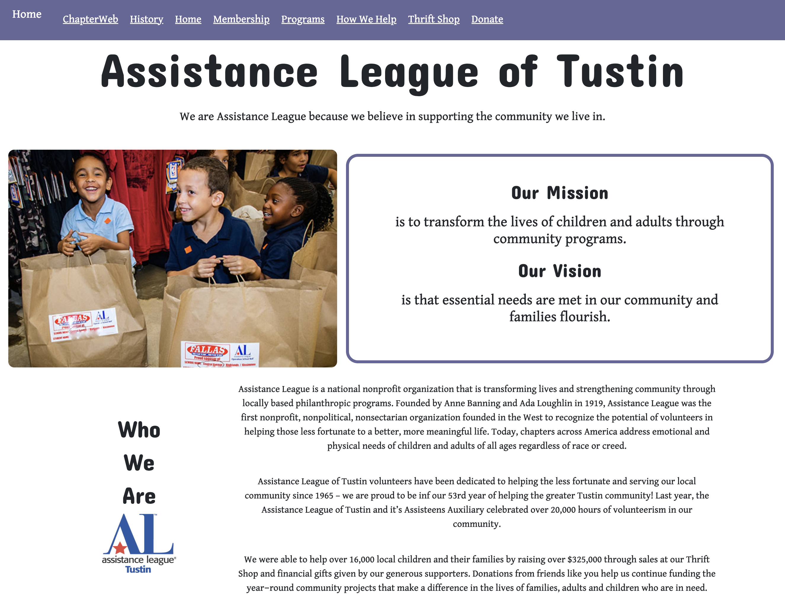
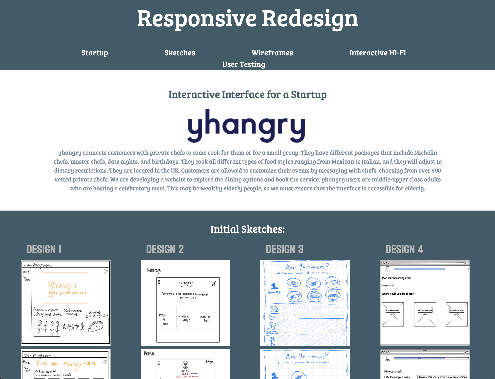

Final Portfolio
ChillyCobra747

hover and click to visit site
Animal Shelter Project
click the puppy to learn more
Context
To practice the functionality of JavaScript, I made this project,
challenging myself to include components, working buttons, an adjustable cart, filters,
and more! The site could be of any theme, but as I love dogs, I chose to create an animal shelter.
Process
Findings
Storyboarding Project
Context
In order to learn more about User Interfaces / User Experience class, I was
tasked to chose and observe user interactions with any physical interface in real life. Through
these observations, I should note (and then draw) how the user interacted with the interface. This
site records my observations, user interview questions, and findings.
Process
Findings

hover and click to visit site

hover and click to visit site
Website Redesign
Context
This website was made as an iteration of a poorly made website I
have previously encountered, which I believed needs improvements. I used a chairty website
I had used in high school, and remembered how poor the user experience was. Thus, I built
this project to improve upon the currently published Assistance Leauge website.
Process
Findings
Startup Website on Figma
Context
Along with 3 teammates, we chose a startup concept we were excited
about, which was yhangry, a British private-chef service. Before viewing the yhangry site,
only with knowledge about what the company does, we challenged outselves to create an
interactive Figma which could be used as the website of our chosen startup.
Process
Findings
